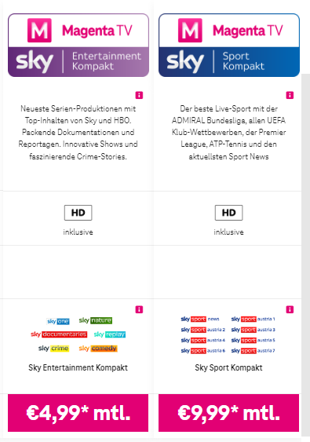
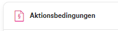
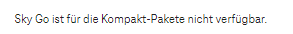
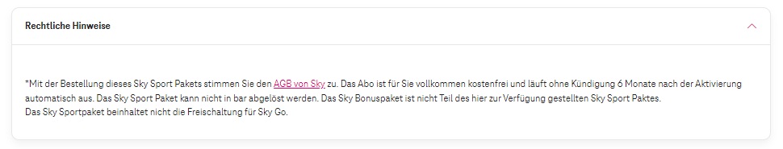

Hallo,
weiss jemand ob es irgendeine Chance gibt, auf meinem Apple TV wo die magenta app läuft auch die sky programme zu schauen.. verwende die Box nicht da Apple TV viel stabiler läuft mit der magenta App… jetzt bekomme ich nur den Hinweis das ich nix benutzen will mit sky… für mich macht die Einschränkung keinen Sinn, und nur zu schrieben aus lizenzrechtlichen Gründen ist auch fadenscheinlich….
danke
Bearbeitet von NoxiusHallo @Noxius ,
willkommen in unserer Community.
Wenn du Sky Kunde bist, solltest du Sky Go nutzen können. Für Magenta Kunden ist zuvor eine Registrierung erforderlich (sofern Sky über Magenta abonniert ist). Eine Kundennummer wird nach Anmeldung innerhalb von zwei Wochen via E-Mail zugeschickt.
Magentastische Grüße JD.
Hallo! Nein es geht um die Freischaltung von magenta 6 Monate sky sport wegen Umstellung Box! Hab da kein sky go !
Schau mal hier, hab das gefunden -> https://www.magenta.at/tv/tv-kanaele#/sky



LG JD.
Wenn die Antwort hilfreich war, wäre es toll, wenn du diese als hilfreich markierst. Danke.
Das ist was anderes… wir haben ja sky sport bekommen als Dankeschön für Wechsel der tv Box… das wurde automatisch freigeschaltet ich habe da keinen Vertrag mit sky oder magenta extra wegen sky…
Schau mal hier: https://www.magenta.at/hilfe-service/info/sky-sport
Dort steht:

---> Das Sky Sportpaket beinhaltet nicht die Freischaltung für Sky Go.
LG JD.
Danke das ist mir ja klar das es nicht sky go geht… mit geht es ja um was anderes… vielleicht bin ich da nicht klar gewesen: mir geht es darum das ich zur Zeit die sky sport programme NUR auf der neuen magenta Box scheuen kann… wenn ich zb auf der magenta tv APP!! Sky sport Progamme lasse sagt er mir, dass es nicht geht weil ich nicht die Box verwende sondern die Magenta App…. Und da ich im Wohnzimmer nur Apple TV in Kombination mit der magenta tv App verwende - da 100 mal mehr stabiler als die magenta Box- würde ich auch gerne auf der magenta tv App die sky Programme schauen .. das kann doch nicht sein das es nicht geht, macht ja kein Sinn für mich…
@Noxius ,
die Sky Programme können nicht mit der Magenta TV App wiedergegeben werden. Darum auch der Verweis auf Sky Go. Da aber dein abonniertes Sky Paket für Sky Go nicht freigeschaltet ist, kannst du Sky nur über die Magenta TV Box schauen.
Magentastische Grüße Andy